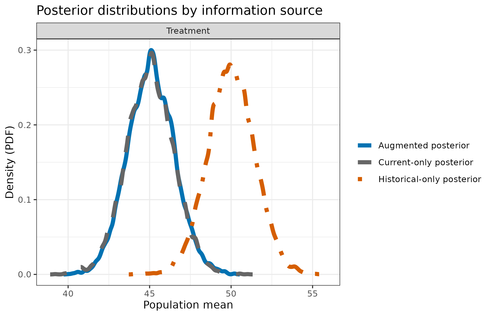
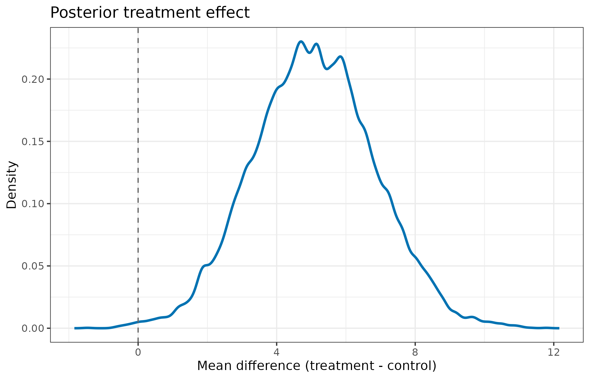

Normal outcomes with bayesDP
Donnie Musgrove
Graeme L. Hickey
2026-11-22
Source:vignettes/bdpnormal-vignette.Rmd
bdpnormal-vignette.RmdPurpose and inputs
bdpnormal() estimates a population mean from a sample
mean, sample standard deviation, and sample size. With two arms, the
effect is the treatment mean minus the control mean. Specify the outcome
units and which direction represents benefit.
Supply each source as a (mu, sigma, N) triplet:
sigma is the sample SD, not a standard error. The suffixes
_t, _c, 0_t, and 0_c
identify the four current/historical and treatment/control sources.
Current treatment is required; controls may be current, historical, or
both. Means and variances must be estimated from at least two
observations with positive SDs.
See the borrowing overview for the
shared methodology. The examples select method = "fixed"
explicitly; "mc" is the default.
One-arm example
The current study has mean 45, SD 10, and 50 participants. The historical study has mean 50, SD 10, and 50 participants. For this illustration, regard the outcome as a continuous score in the same units in both studies.
set.seed(42)
current_only <- bdpnormal(
mu_t = 45, sigma_t = 10, N_t = 50,
mu0_t = 50, sigma0_t = 10, N0_t = 50,
method = "fixed", fix_alpha = TRUE, alpha_max = 0
)
set.seed(42)
discounted <- bdpnormal(
mu_t = 45, sigma_t = 10, N_t = 50,
mu0_t = 50, sigma0_t = 10, N0_t = 50,
method = "fixed", fix_alpha = FALSE, alpha_max = 1
)
set.seed(42)
full_borrowing <- bdpnormal(
mu_t = 45, sigma_t = 10, N_t = 50,
mu0_t = 50, sigma0_t = 10, N0_t = 50,
method = "fixed", fix_alpha = TRUE, alpha_max = 1
)
fits <- list("Current only" = current_only, "Discounted" = discounted,
"Full borrowing" = full_borrowing)
comparison <- do.call(rbind, lapply(fits, function(fit) {
arm <- fit$posterior_treatment
c(alpha = arm$alpha_discount, median = median(arm$posterior_mu),
lower = unname(quantile(arm$posterior_mu, 0.025)),
upper = unname(quantile(arm$posterior_mu, 0.975)))
}))
knitr::kable(comparison, digits = 4,
col.names = c("Historical weight", "Median mean", "Lower 95% CrI", "Upper 95% CrI"))| Historical weight | Median mean | Lower 95% CrI | Upper 95% CrI | |
|---|---|---|---|---|
| Current only | 0.0000 | 45.0154 | 42.2132 | 47.8762 |
| Discounted | 0.0134 | 45.0795 | 42.2972 | 47.9262 |
| Full borrowing | 1.0000 | 47.5208 | 45.4329 | 49.6303 |
The estimated historical weight is 0.0134, so the posterior median mean, 45.0795, remains close to the current sample mean. With full borrowing the median is 47.5208, approximately halfway between 45 and 50 in this equal-size, equal-SD example. With unequal variances, the sources have different precisions, so full borrowing need not give the sample-size-weighted mean.
plot(discounted, type = "posteriors")
Posterior distributions of the population mean. Estimated borrowing is small because the current and historical means differ relative to their precision.
Two-arm example
Add current and historical control groups with mean 40, SD 10, and 50 participants each.
set.seed(42)
fit_two <- bdpnormal(
mu_t = 45, sigma_t = 10, N_t = 50,
mu0_t = 50, sigma0_t = 10, N0_t = 50,
mu_c = 40, sigma_c = 10, N_c = 50,
mu0_c = 40, sigma0_c = 10, N0_c = 50,
method = "fixed", fix_alpha = FALSE, alpha_max = 1
)
summary(fit_two)##
## Two-armed bdp normal
##
## data:
## Current treatment: mu_t = 45, sigma_t = 10, N_t = 50
## Current control: mu_c = 40, sigma_c = 10, N_c = 50
## Historical treatment: mu0_t = 50, sigma0_t = 10, N0_t = 50
## Historical control: mu0_c = 40, sigma0_c = 10, N0_c = 50
## Stochastic comparison (p_hat) - treatment (current vs. historical data): 0.0134
## Stochastic comparison (p_hat) - control (current vs. historical data): 0.9922
## Discount function value (alpha) - treatment: 0.0134
## Discount function value (alpha) - control: 0.9922
## Treatment effect: treatment - control
## 95 percent equal-tailed credible interval:
## 1.7412 8.5362
## Posterior medians:
## treatment group control group
## 45.0795 40.0076
mean_difference <- fit_two$posterior_treatment$posterior_mu -
fit_two$posterior_control$posterior_mu
mean_interval <- quantile(mean_difference, c(0.025, 0.975))The historical control weight is 0.9922, compared with 0.0134 for treatment. The posterior median treatment-minus-control difference is 5.0725 score units, with a 95% credible interval from 1.7412 to 8.5362. The interval lies above zero, supporting a positive effect under this analysis. Whether that effect is beneficial or clinically important depends on the score definition and a prespecified meaningful difference.
plot(fit_two, type = "effect")
Posterior treatment-minus-control mean difference, with zero marked by the dashed line.
Sensitivity to the weighting method
set.seed(42)
fit_mc <- bdpnormal(
mu_t = 45, sigma_t = 10, N_t = 50,
mu0_t = 50, sigma0_t = 10, N0_t = 50,
method = "mc", fix_alpha = FALSE, alpha_max = 1
)
knitr::kable(rbind(
"Historical weight" = quantile(fit_mc$posterior_treatment$alpha_discount, c(0.025, 0.5, 0.975)),
"Population mean" = quantile(fit_mc$posterior_treatment$posterior_mu, c(0.025, 0.5, 0.975))
), digits = 4)| 2.5% | 50% | 97.5% | |
|---|---|---|---|
| Historical weight | 0.0000 | 0.0138 | 0.6276 |
| Population mean | 42.4388 | 45.2970 | 48.3085 |
The draw-specific calculation mixes over generated weights. It is not
merely a less precise estimate of the fixed-weight result. Compare the
outcome summaries as well as the weight distribution, and increase
number_mcmc to assess numerical stability.
Model and computation
For each source, assume independent normal observations and the baseline prior p(\mu,\sigma^2)\propto1/\sigma^2. Let \bar y,s,N be the current sample mean, SD, and size. The separate current-data posterior is
\begin{aligned} \tilde\sigma^2\mid\text{data}&\sim\operatorname{InverseGamma}\left(\frac{N-1}{2},\frac{(N-1)s^2}{2}\right),\\ \tilde\mu\mid\tilde\sigma^2,\text{data}&\sim\mathcal N(\bar y,\tilde\sigma^2/N). \end{aligned}
The inverse-gamma convention has density proportional to x^{-a-1}\exp(-b/x) for shape a and scale b. Replace the statistics by \bar y_0,s_0,N_0 for the historical posterior, with draws \mu_0,\sigma_0^2. These are posterior distributions of population parameters, not predictive distributions for a new observation (Gelman et al. 2013).
For a fixed estimated weight, use q=\Pr(\tilde\mu<\mu_0\mid\text{data}) and p=2\min(q,1-q). The draw-specific method instead uses
Z_s=\frac{|\tilde\mu^{(s)}-\mu_0^{(s)}|} {\sqrt{\tilde\sigma^{2(s)}/N+\sigma_0^{2(s)}/N_0}}, \qquad p_s=2\{1-\Phi(Z_s)\}.
Here \Phi is the standard normal CDF, and the variance terms are conditional variances of the mean draws. Apply the chosen discount function to obtain \alpha or \alpha_s.
For given variance draws and weight, define
\begin{aligned} V_s &= \left(\frac{N}{\tilde\sigma^{2(s)}}+ \frac{\alpha_s N_0}{\sigma_0^{2(s)}}\right)^{-1},\\ M_s &= V_s\left(\frac{N\bar y}{\tilde\sigma^{2(s)}}+ \frac{\alpha_s N_0\bar y_0}{\sigma_0^{2(s)}}\right). \end{aligned}
The implementation draws \mu^{(s)}\sim\mathcal N(M_s,V_s), setting
\alpha_s=\alpha for the fixed method.
The reported distribution averages over the sampled variances and, under
"mc", weights. It is therefore a mixture of conditional
normals, not a single marginal normal distribution. This
precision-weighted calculation follows the normal borrowing construction
described by Haddad et al. (2017); it does
not fit one pooled common-variance model.
Without historical data, the marginal posterior of the mean is Student-t with N-1 degrees of freedom, location \bar y, and scale s/\sqrt N. Its equal-tailed credible limits coincide with the usual one-sample t interval under these assumptions; the function does not conduct a one-sample hypothesis test.
Assumptions and checks
Check the normal approximation, independence, common outcome units, and comparable analysis populations. Summary inputs cannot reveal outliers, clustering, or changes in the distributional shape. Use linear regression when covariate adjustment is needed. Assess sensitivity to historical weights and variance differences; a small weight should not be interpreted as a posterior probability that the studies are incompatible.